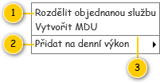

Nahrazeno: 701UC04: Zobrazit kontextovou nabídku.
Stručný popis
Obecný popis kontextové nabídky, která může být použita napříč celým systémem. Konkrétní specifikace je pak uvedena u samotného použití nabídky. Jednotlivé položky jsou postupně vkládány, tomu odpovídá i jejich pořadí v rámci nabídky.
Poznámka: Pokud nejsou v rámci nabídky žádné viditelné položky typu Tlačítko nebo Rozbalovací nabídka, nedojde k zobrazení kontextové nabídky.
Uživatelské rozhraní
Rozložení
Drátový diagram

Přehled UI komponent
| Callout | Typ položky | Popis | Poznámka |
|---|---|---|---|
| 1 | Tlačítko | Stisknutím dojde k vyvolání přiřazené akce. Následně je uzavřena kontextová nabídka. Vstupní parametry jsou následující:
| Po kliknutí na tlačítko dojde k uzavření kontextové nabídky. |
| 2 | Rozbalovací nabídka | Stisknutím dojde k zobrazení další úrovně nabídky. Vstupní parametry jsou následující:
| Viz Další úroveň nabídky. Pokud nejsou v rámci nabídky další úrovně žádné viditelné položky typu Tlačítko nebo Rozbalovací nabídka, nedojde po stisknutí k zobrazení další úrovně kontextové nabídky. Tomu odpovídá i zobrazení nabídky – položka není zpřístupněna. |
| 3 | Oddělovač | Graficky odděluje jednotlivé položky nabídky. | Pokud jsou přímo za sebou uvedeny 2 oddělovače, zobrazí se pouze jeden. Může nastat např. při skrytí všech položek mezi 2 oddělovači. |
Chování
Zobrazení nabídky
Nabídka se zobrazuje v místě, kde došlo k požadavku na její zobrazení. Pokud by se ale nabídka nevešla na obrazovku monitoru, dojde k jejímu posunutí tak, aby mohla být zobrazena celá.
Další úroveň nabídky
Po stisknutí položky typu Rozbalovací nabídka dojde k zobrazení další úrovně kontextové nabídky. Ta je zobrazena na úrovni stisknuté položky, viz obrázek. Pokud by se ale nabídka nevešla na obrazovku monitoru, dojde k jejímu posunutí tak, aby mohla být zobrazena celá.